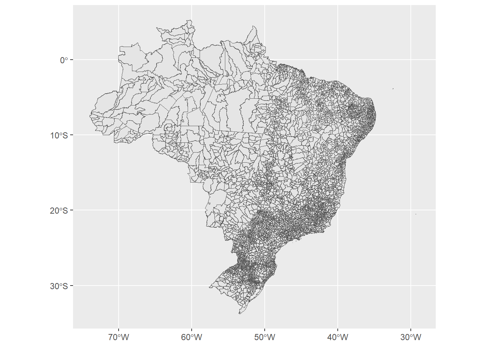
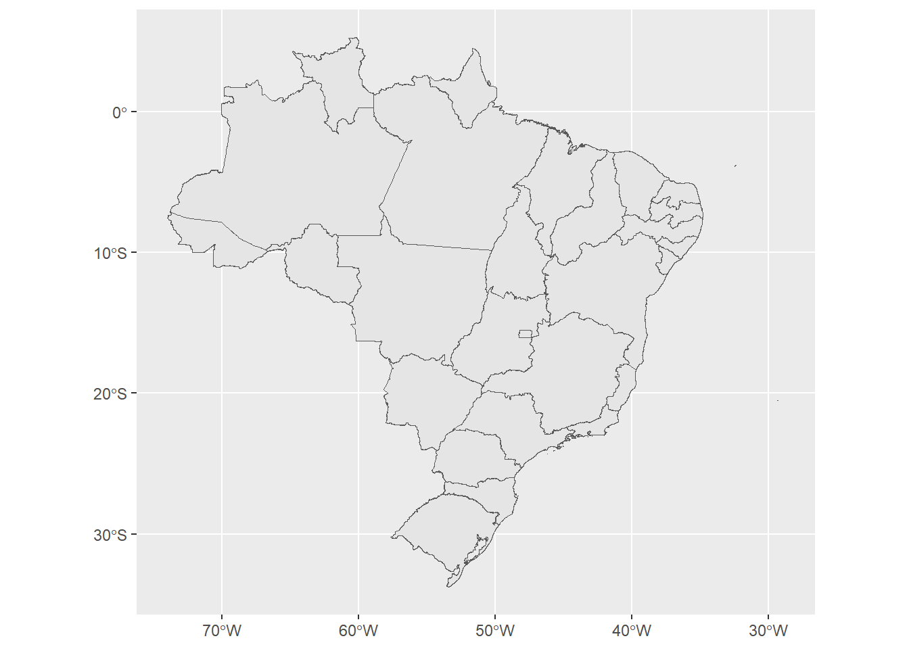
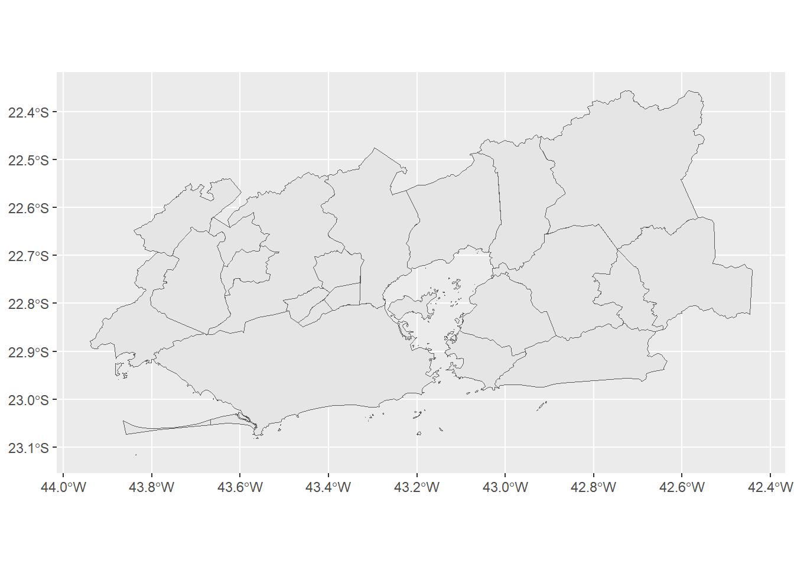
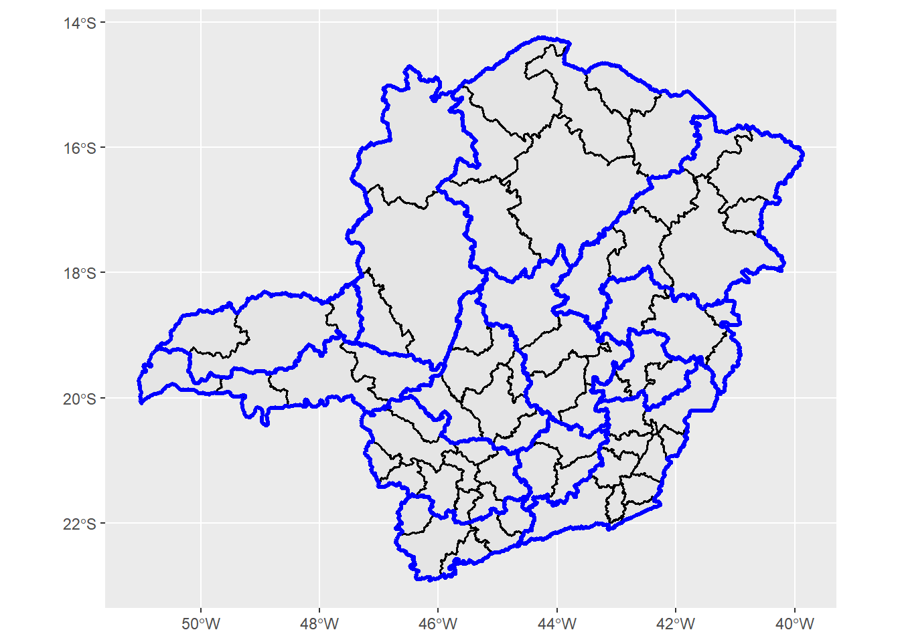
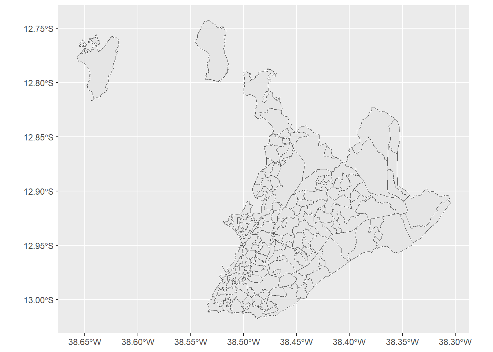
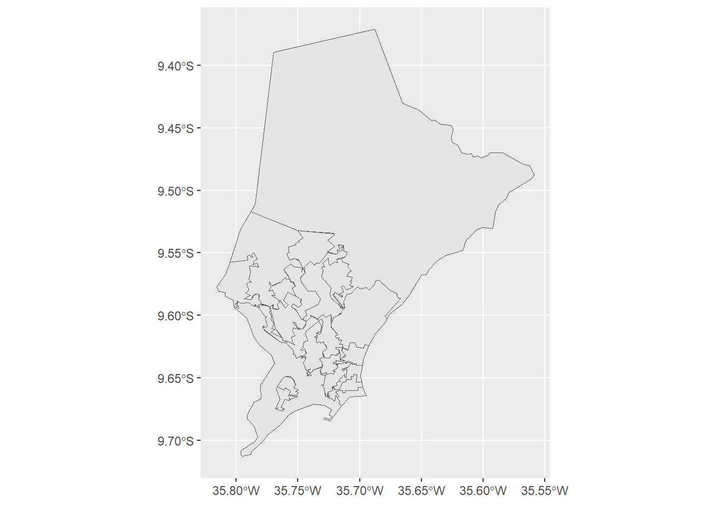

library(geobr)
library(dplyr)
library(ggplot2)1 Conceitos e Métodos
1.1 Por que dados populacionais importam
O território de uma cidade ou região é habitado por pessoas com características sociodemográficas distintas (idade, renda, escolaridade, raça, gênero, composição familiar) que vivem em condições muito variadas de habitação, saneamento, acesso a serviços e mobilidade. Conhecer essas condições permite que entendamos adequadamente suas necessidades, de modo que possamos definir bem as prioridades de planejamento urbano e regional ao longo do país.
Considere alguns exemplos. A demanda por equipamentos de saúde depende da estrutura etária e das condições de renda da população em cada área da cidade. A escolha dos locais para construção de escolas requer saber onde vivem crianças e adolescentes em idade escolar. O dimensionamento de redes de saneamento básico exige conhecer quantos domicílios existem em cada setor do território e em que condições se encontram. O planejamento dos sistemsa de transporte precisa saber onde moram e trabalham as pessoas, quanto ganham e de que forma se deslocam. Em todos esses casos, a eficácia das políticas públicas depende da qualidade e da granularidade dos dados disponíveis sobre a população.
Essa necessidade é especialmente crítica em países com grandes desigualdades intraurbanas, como o Brasil. Em uma mesma cidade, bairros vizinhos podem apresentar condições de renda, habitação e acesso a serviços completamente distintas. Sabemos, inclusive, que não é raro que essas diferenças se apresentem dentro de um mesmo bairro! Deste modo, políticas formuladas com base em médias municipais tendem a ignorar essas diferenças e, frequentemente, a aprofundá-las. Dados desagregados em nível intraurbano são, portanto, indispensáveis para um diagnóstico adequado e para o monitoramento dos efeitos de qualquer intervenção.
No Brasil, a principal fonte de dados populacionais com essa capacidade de desagregação espacial é o Censo Demográfico, realizado pelo Instituto Brasileiro de Geografia e Estatística (IBGE). Este capítulo apresenta alguns fundamentos conceituais e metodológicos para compreender e utilizar esses dados: o papel institucional do IBGE, os recortes geográficos que organizam o território para fins estatísticos, as características e o histórico do Censo, a estrutura dos questionários, as unidades de coleta e análise, e as principais formas de acesso não programático aos dados. Os capítulos seguintes desta parte aprofundam cada um dos produtos do Censo: agregados por setor censitário (Cap. 2), microdados (Cap. 3), grade estatística (Cap. 4) e CNEFE (Cap. 5).
Embora existam ferramentas de acesso não programático aos dados do Censo (a serem apresentadas na seção 1.7), o foco deste livro é a exploração dessas bases em R, o que nos permitirá uma flexibilidade incrível de manipuçação dessas informações. Ao longo dos capítulos, utilizaremos três pacotes principais: o geobr, que permite baixar recortes geográficos oficiais do Brasil diretamente no R; o censobr, que dá acesso aos dados do Censo Demográfico (agregados por setor censitário e microdados) de forma padronizada; e o cnefetools, voltado para o processamento e análise do Cadastro Nacional de Endereços para Fins Estatísticos (CNEFE).
1.2 O IBGE
O Instituto Brasileiro de Geografia e Estatística (IBGE) é o órgão federal responsável pela produção e divulgação das estatísticas oficiais do Brasil. Sua missão institucional é “retratar o Brasil com informações necessárias para conhecer sua realidade e exercer a cidadania” (IBGE, 2026). A primeira agência estatística brasileira com caráter permanente foi a Diretoria Geral de Estatística, criada em 1871. Após sucessivas reorganizações, o governo federal criou, em 1934, o Instituto Nacional de Estatística (INE), que iniciou suas operações em maio de 1936. Em 1937, o Conselho Brasileiro de Geografia foi incorporado ao INE, dando origem ao nome atual. Para cumprir sua missão, o IBGE mantém hoje uma rede que abrange 27 superintendências estaduais e mais de 560 agências de coleta distribuídas por todo o território nacional.
As atividades do Instituto organizam-se em duas frentes. Na de estatísticas, o IBGE produz informações em três áreas: (i) sociais e demográficas (idade, sexo, cor ou raça, educação, trabalho, renda, habitação, migração, saúde, saneamento, entre outros temas); (ii) econômicas (produção, comércio, indústria e contas nacionais); e (iii) agropecuárias (estrutura fundiária e produção rural). Na de geociências, é o responsável oficial pela organização do território nacional, incluindo o posicionamento geodésico, a cartografia e a definição dos recortes territoriais usados nas pesquisas — aspecto detalhado na seção 1.3. É importante salientar que as estatísticas sociais e demográficas são obtidas por pesquisas domiciliares, registros públicos e levantamentos em estabelecimentos. A Tabela 1.1 apresenta algumas das principais pesquisas domiciliares realizadas pelo IBGE:
| Pesquisa | Sigla | Periodicidade | Temas principais |
|---|---|---|---|
| Censo Demográfico | Censo | Decenal | População, domicílios e condições de vida |
| Pesquisa Nacional por Amostra de Domicílios Contínua | PNAD-C | Trimestral (desde 2012) | Trabalho, renda e educação |
| Pesquisa de Orçamentos Familiares | POF | Irregular (Últimas edições: 2002-03, 2008-09, 2017-18, 2024-25) | Consumo, despesas e orçamento familiar |
| Pesquisa Nacional de Saúde | PNS | Quinquenal (Últimas edições: 2013, 2019) | Saúde e acesso a serviços |
Entre todas essas pesquisas, o Censo Demográfico ocupa uma posição de destaque: é a única que cobre a totalidade da população e permite desagregação espacial em nível intraurbano, a característica que o torna indispensável para o planejamento local e que é detalhada nas seções seguintes. Antes de começarmos a falar especificamente do Censo, entretanto, é importante que entendamos melhor a respeito desses níveis espaciais ou recortes geográficos sobre os quais podemos obter informações estatísticas da população.
1.3 Recortes Geográficos do IBGE
Para que as estatísticas possam ser associadas a um lugar, o IBGE organiza o território nacional em diferentes tipos de recortes espaciais, sistematizados no Quadro Geográfico de Referência para Produção, Análise e Disseminação de Estatísticas (IBGE, 2024). Esses recortes dividem-se em duas grandes categorias. Os recortes legais são definidos por legislação federal ou estadual e existem independentemente do IBGE, sendo os mais conhecidos os recortes de país, grandes regiões, estados, regiões metropolitanas e municípios. No nível intraurbano, os recortes legais são os distritos e subdistritos, subdivisões administrativas dos municípios.
Os recortes institucionais, por sua vez, são criados pelo próprio IBGE para fins de organização operacional e divulgação de dados. Em escala supramunicipal, incluem as regiões geográficas intermediárias e imediatas (que substituíram, respectivamente, as mesorregiões e microrregiões na classificação de 2017, que veremos mais adiante). No nível intraurbano, os recortes institucionais para a análise de dados do Censo são as áreas de ponderação, os setores censitários e a grade estatística, cada um com características específicas de resolução espacial e riqueza temática.
Um conceito fundamental para compreender os produtos do Censo é o de resolução espacial, que é a medida do nível de detalhe geográfico de um conjunto de dados. Quanto maior a resolução espacial, menores são as unidades representadas e mais precisamente os dados podem ser localizados no território. A grade estatística (células de 200 × 200 metros nas áreas urbanas e 1 × 1 km nas rurais) representa a maior resolução espacial disponível nos produtos do IBGE. Já o país, como um todo, a menor.
Há, porém, uma relação inversa entre resolução espacial e riqueza temática das informações divulgadas, ou seja, quanto maior a resolução espacial, menor a quantidade de estatísticas divulgadas neste nível. Isso ocorre porque o IBGE é legalmente obrigado a proteger o sigilo das informações individuais coletadas . Em unidades geográficas muito pequenas, divulgar muitas variáveis aumenta o risco de que uma combinação de características permita identificar um domicílio ou uma pessoa específica. Por essa razão, a grade estatística disponibiliza apenas totais populacionais e de domicílios, enquanto os microdados do questionário da amostra — muito mais ricos tematicamente — são identificados apenas até o nível da área de ponderação, que agrega domicílios em número suficiente para preservar o anonimato. Esse trade-off entre resolução espacial e detalhe temático é central para entender as capacidades e limitações de cada produto do Censo, detalhados nos capítulos seguintes.
1.4 Explorando recortes geográficos com o geobr
Todos os recortes geográficos do IBGE podem ser explorados interativamente no portal Recortes Geográficos para Estatísticas - Quadro Geográfico do IBGE (IBGE, 2024). Para acesso programático em R, o pacote geobr (Pereira & Goncalves, 2025) disponibiliza funções para download direto das malhas oficiais do IBGE, com geometrias simplificadas prontas para análise e visualização. A documentação completa encontra-se em ipeagit.github.io/geobr.
Vamos começar adicionando as bibliotecas necessárias para processamento e visualização dos dados:
A Figura 1.1 ilustra a diferença entre recortes legais e institucionais para o território brasileiro: os municípios representam a malha legal de base, enquanto as regiões intermediárias agrupam municípios contíguos com similaridades socioeconômicas para fins de organização estatística.
# Download de municípios e regiões intermediárias
municipios <- read_municipality(year = 2020)
mesorregioes <- read_intermediate_region(year = 2020)
# Plotando os mapas dos municípios e regiões intermediárias com ggplot:
ggplot(municipios) +
geom_sf()
ggplot(mesorregioes) +
geom_sf()


É possível explorar as malhas geográficas disponibilizadas pelo geobr por meio da função list_geobr(), que retorna um data.frame com todos os conjuntos de dados disponíveis, seus anos e uma breve descrição. É importante destacar além de trazer os recortes geográficos previstos pelo IBGE, o pacote também traz bases espaciais específicas de certos setores, a exemplo das regiões de saúde do DataSUS (read_health_region) e das escolas do INEP (read_schools). Sendo assim, o list_geobr() é um bom ponto de partida para descobrir o que o pacote oferece.
library(geobr)
library(knitr)
kable(list_geobr())geobr.
| function | geography | years | source |
|---|---|---|---|
read_country |
Country | 1872, 1900, 1911, 1920, 1933, 1940, 1950, 1960, 1970, 1980, 1991, 2000, 2001, 2010, 2013, 2014, 2015, 2016, 2017, 2018, 2019, 2020 | IBGE |
read_region |
Region | 2000, 2001, 2010, 2013, 2014, 2015, 2016, 2017, 2018, 2019, 2020 | IBGE |
read_state |
States | 1872, 1900, 1911, 1920, 1933, 1940, 1950, 1960, 1970, 1980, 1991, 2000, 2001, 2010, 2013, 2014, 2015, 2016, 2017, 2018, 2019, 2020 | IBGE |
read_meso_region |
Meso region | 2000, 2001, 2010, 2013, 2014, 2015, 2016, 2017, 2018, 2019, 2020 | IBGE |
read_micro_region |
Micro region | 2000, 2001, 2010, 2013, 2014, 2015, 2016, 2017, 2018, 2019, 2020 | IBGE |
read_intermediate_region |
Intermediate region | 2017, 2019, 2020 | IBGE |
read_immediate_region |
Immediate region | 2017, 2019, 2020 | IBGE |
read_municipality |
Municipality | 1872, 1900, 1911, 1920, 1933, 1940, 1950, 1960, 1970, 1980, 1991, 2000, 2001, 2005, 2007, 2010, 2013, 2014, 2015, 2016, 2017, 2018, 2019, 2020, 2021, 2022, 2023, 2024 | IBGE |
read_municipal_seat |
Municipality seats (sedes municipais) | 1872, 1900, 1911, 1920, 1933, 1940, 1950, 1960, 1970, 1980, 1991, 2010 | IBGE |
read_weighting_area |
Census weighting area (área de ponderação) | 2010 | IBGE |
read_census_tract |
Census tract (setor censitário) | 2000, 2010, 2017, 2019, 2020, 2022 | IBGE |
read_statistical_grid |
Statistical Grid of 200 x 200 meters | 2010 | IBGE |
read_metro_area |
Metropolitan areas | 1970, 2001, 2002, 2003, 2005, 2010, 2013, 2014, 2015, 2016, 2017, 2018 | IBGE |
read_urban_area |
Urban footprints | 2005, 2015 | IBGE |
read_amazon |
Brazil’s Legal Amazon | 2012 | MMA |
read_biomes |
Biomes | 2004, 2019 | IBGE |
read_conservation_units |
Environmental Conservation Units | 201909 | MMA |
read_disaster_risk_area |
Disaster risk areas | 2010 | CEMADEN and IBGE |
read_indigenous_land |
Indigenous lands | 201907, 202103 | FUNAI |
read_semiarid |
Semi Arid region | 2005, 2017, 2021, 2022 | IBGE |
read_health_facilities |
Health facilities | 201505, 202303 | CNES, DataSUS |
read_health_region |
Health regions and macro regions | 1991, 1994, 1997, 2001, 2005, 2013 | DataSUS |
read_neighborhood |
Neighborhood limits | 2010 | IBGE |
read_schools |
Schools | 2020, 2023 | INEP |
read_comparable_areas |
Historically comparable municipalities, aka Áreas mínimas comparáveis (AMCs) | 1872, 1900, 1911, 1920, 1933, 1940, 1950, 1960, 1970, 1980, 1991, 2000, 2010 | IBGE |
read_urban_concentrations |
Urban concentration areas (concentrações urbanas) | 2015 | IBGE |
read_pop_arrangements |
Population arrangements (arranjos populacionais) | 2015 | IBGE |
A maioria das funções do geobr compartilha os mesmos parâmetros:
year: o ano de referência da malha, no formato YYYY;code_*: código IBGE ou sigla do estado com 2 dígitos ou código IBGE do município com 7 dígitos. Em geral, omitir esse parâmetro retorna o Brasil inteiro. Obs.: quando não souber o código IBGE do município, é possível utilizar a funçãolookup_muni. Para encontrar o código IBGE de Fortaleza, por exemplo, façalookup_muni(name_muni = 'Fortaleza')$code_muni.simplified: parâmetro que éTRUEpor padrão, retornando uma geometria simplificada de menor tamanho em memória, adequada para processamento dos dados. Sesimplified = F, então a malha virá sem imperfeições, mais adequada para visualização (especialmente mais aproximada das fronteiras das feições);showProgress: exibe barra de progresso no download;cache: parâmero que éTRUEpor padrão, reutilizando dados já baixados localmente, evitando downloads repetidos.
Os exemplos a seguir exploram as principais funções, organizados do nível supramunicipal ao intraurbano.
1.4.1 Recortes supramunicipais legais
Os estados e as regiões metropolitanas são os recortes supramunicipais legais mais utilizados. read_state baixa os limites estaduais, ao passo que read_metro_area baixa os recortes metropolitanos oficiais. Em ambos os casos, omitir o parâmetro code_state retorna o Brasil inteiro (Figura 1.2).
library(ggplot2)
estados <- read_state(year = 2020)
metros <- read_metro_area(year = 2018)
ggplot(estados) +
geom_sf()
ggplot(metros) +
geom_sf()


Caso você queria somente os estados do Ceará e a Região Metropolitana do Rio de Janeiro, é possível utilizar o code_state no primeiro caso e um filter do pacote dplyr no segundo, conforme a Figura 1.3.
library(ggplot2)
ceara <- read_state(year = 2020, code_state = "CE")
rmrj <- read_metro_area(year = 2018) |>
filter(name_metro == "RM Rio de Janeiro")
ggplot(ceara) +
geom_sf()
ggplot(rmrj) +
geom_sf()

1.4.2 Recortes supramunicipais institucionais
As Regiões Geográficas Intermediárias e Imediatas são a classificação institucional vigente, adotada pelo IBGE em 2017 para substituir as mesorregiões e microrregiões. read_intermediate_region() e read_immediate_region() baixam esses recortes, equanto read_meso_region() e read_micro_region() retornam a classificação anterior, ainda amplamente utilizada em estudos e bases de dados mais antigas. Na Figura 1.4, veremos em um único mapa estes dois recortes para o estado de Minas Gerais, distinguindo-os pela coloração e espessura da linha de contorno. Observe que também definimos a cor de preenchimento dos polígonos das regiões intermediárias como vazio (NA), de modo que a camada passada inicialmente (imediatas) não seja sobreposta completamente.
intermediarias <- read_intermediate_region(year = 2020,
code_intermediate = "MG")
imediatas <- read_immediate_region(year = 2020,
code_immediate = "MG")
ggplot() +
geom_sf(data = imediatas, color = 'black', linewidth = 0.6) +
geom_sf(data = intermediarias, color = 'blue', linewidth = 1.2, fill = NA)

1.4.3 Recortes intramunicipais legais
No nível intraurbano, read_neighborhood() disponibiliza os limites de bairros. A função não possui parâmetro de filtragem por município, retornando os bairros de todos os 720 municípios cobertos de uma vez, e o filtro é feito depois no data.frame resultante. A cobertura é parcial, uma vez que nem todos os municípios disponibilizaram seus limites oficiais ao IBGE.
library(dplyr)
bairros <- read_neighborhood(year = 2022, showProgress = FALSE)
bairros |>
filter(name_muni == "Salvador") |>
ggplot() +
geom_sf()

1.4.4 Recortes intramunicipais institucionais
Estes são os recortes que mais nos interessam nesse estudo. read_weighting_area() e read_census_tract() baixam, respectivamente, as áreas de ponderação e os setores censitários. Ambos aceitam código de estado (sigla ou 2 dígitos) ou código de município (7 dígitos) nos parâmetros code_weighting e code_tract, o que permite baixar apenas os dados de interesse sem carregar o Brasil inteiro. O mapa a seguir compara os dois recortes para Salvador, antecipando a discussão da seção 1.6.
# Código IBGE de Maceió: 2927408
areas_pond <- read_weighting_area(code_weighting = 2704302, year = 2010)
setores <- read_census_tract(code_tract = 2704302, year = 2010)
ggplot(areas_pond) +
geom_sf()
ggplot(setores) +
geom_sf()


1.5 O Censo Demográfico
O Censo Demográfico é o maior e mais complexo levantamento estatístico do Brasil. Diferente das pesquisas por amostragem — como a PNAD-C, a POF ou a PNS, que entrevistam apenas uma fração dos domicílios —, o Censo tem como ambição cobrir todos os domicílios do território nacional, sem exceção. Essa universalidade é o que o torna insubstituível: é a única pesquisa capaz de fornecer informações estatísticas desagregadas em qualquer recorte do território, desde o nível nacional até o setor censitário.
Os objetivos centrais do Censo são dois: contar todos os habitantes do território nacional e identificar as condições em que vivem, revelando não apenas quantas pessoas moram em cada lugar, mas como é sua moradia, qual é sua renda, qual é seu nível de escolaridade, quais são suas condições de saneamento, entre muitas outras dimensões. O resultado é um retrato estatístico de alta resolução do país inteiro, com um detalhamento espacial que nenhuma outra pesquisa periódica consegue oferecer.
O primeiro recenseamento do território brasileiro foi realizado em 1872, no Período Imperial. A partir de 1890, o Censo passou a ter periodicidade decenal, embora as edições previstas para 1910 e 1930 não tenham sido realizadas. No século XX, foram realizados Censos em 1940, 1950, 1960, 1970, 1980 e 1991. No século XXI, as edições foram as de 2000, 2010 e 2022. O mais recente ocorreu com um intervalo de doze anos em relação ao anterior, em razão da pandemia de Covid-19, que inviabilizou sua realização no ano previsto de 2020, e de dificuldades no planejamento e financiamento da pesquisa naquele período.
A data de referência do Censo é o instante que define quem é recenseável. No caso do Censo de 2022, foi a meia-noite do dia 31 de julho de 2022: qualquer pessoa que residia em um domicílio brasileiro nesse momento é, por definição, parte da população recenseada. Moradores que estivessem temporariamente fora de casa na data da visita do recenseador eram registrados normalmente, desde que o domicílio fosse seu local habitual de residência (IBGE, 2016).
Realizar um censo demográfico é uma das operações logísticas mais complexas que um Estado pode empreender. Para o Censo de 2022, o IBGE coordenou centenas de milhares de agentes recenseadores distribuídos por todos os municípios do país, com a missão de visitar individualmente cada domicílio brasileiro, incluindo áreas urbanas densas, zonas rurais isoladas, territórios indígenas e comunidades de difícil acesso. Essa escala exige anos de preparação antes do trabalho de campo e anos de processamento e divulgação de resultados após sua conclusão.
A importância do Censo ultrapassa sua própria produção de dados. Por oferecer a única contagem exaustiva da população em nível intraurbano, ele fundamenta o funcionamento de todo o sistema de estatísticas nacionais. As pesquisas por amostragem do IBGE utilizam os resultados do Censo para calibrar os pesos de suas amostras, garantindo que os resultados sejam representativos para a população como um todo. Projeções populacionais para os anos entre censos, utilizadas para o planejamento público e a distribuição de recursos entre municípios, também são calculadas com base nas tendências observadas entre edições censitárias. Sem o Censo, o sistema estatístico brasileiro perderia sua referência de ancoragem.
Nota
Desafios e limitações do Censo
A realização de um censo demográfico envolve desafios logísticos e metodológicos consideráveis. O mais fundamental é a impossibilidade de garantir cobertura total da população: parte dos habitantes não é recenseada, fenômeno conhecido como subenumeração. Essa lacuna não se distribui de forma uniforme no território — regiões de difícil acesso, áreas de conflito fundiário e populações em situação de rua tendem a apresentar taxas mais elevadas (IBGE, 2016). Populações indígenas com menor contato com a sociedade envolvente representam um desafio adicional. Outro desafio é a periodicidade decenal: com intervalos de dez anos entre censos (doze anos no caso de 2010–2022, em razão da pandemia de Covid-19), os dados envelhecem rapidamente em um país com dinâmica urbana acelerada. Para mitigar essa limitação, o IBGE realiza periodicamente pesquisas amostrais que permitem atualizar estimativas entre censos, mas sem a mesma granularidade espacial.
A realização de censos demográficos periódicos é prática comum entre os institutos nacionais de estatística ao redor do mundo. Nos Estados Unidos, o Census Bureau conduz um censo decenal desde 1790, complementado pela American Community Survey (ACS), pesquisa amostral anual que fornece estimativas de características socioeconômicas em nível local entre os censos. Em Portugal e Espanha, o Instituto Nacional de Estatística (INE) realiza recenseamentos decenais com estrutura metodológica semelhante à do IBGE. O Statistics Canada conduz o censo a cada cinco anos, alternando entre um recenseamento completo e uma versão com questionário expandido aplicado a uma amostra. Em todos esses casos, a lógica central é a mesma: combinar uma contagem universal da população com a coleta de informações detalhadas sobre suas características, produzindo a base de referência a partir da qual todas as demais pesquisas são calibradas.